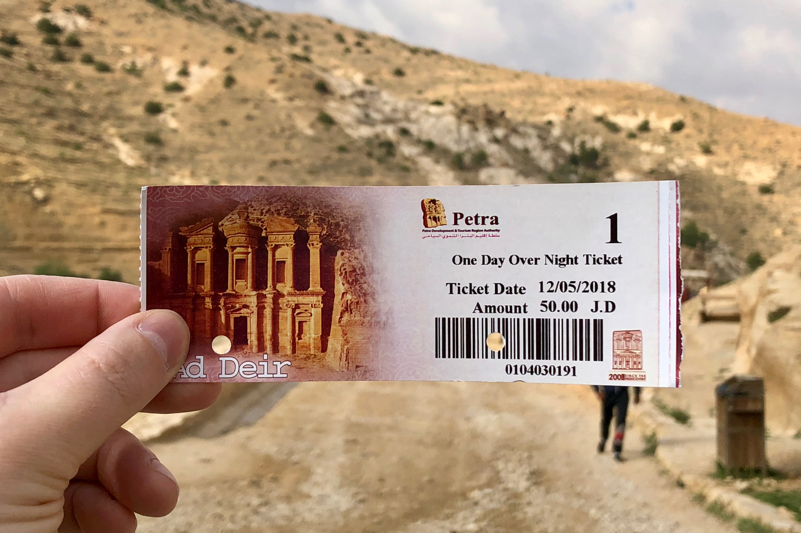
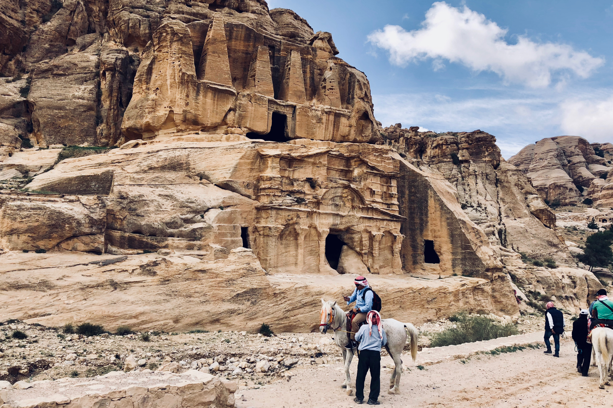
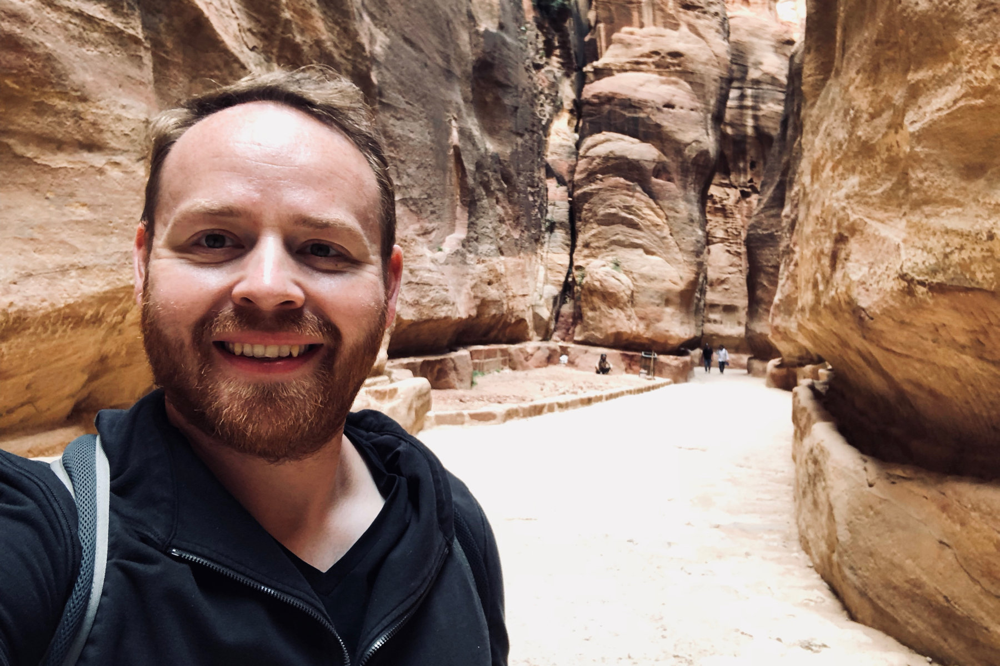
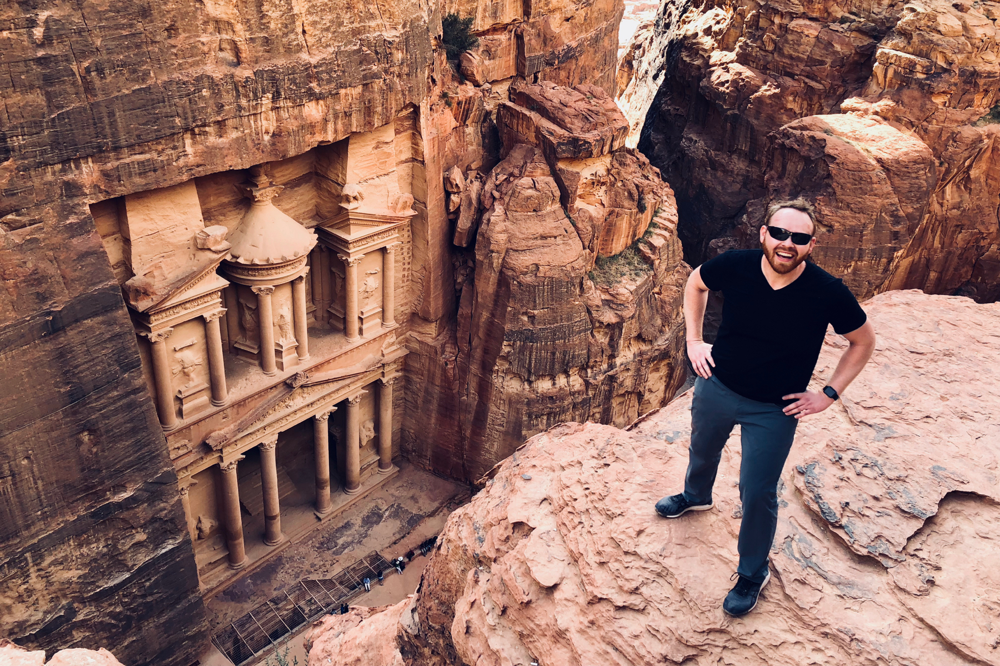
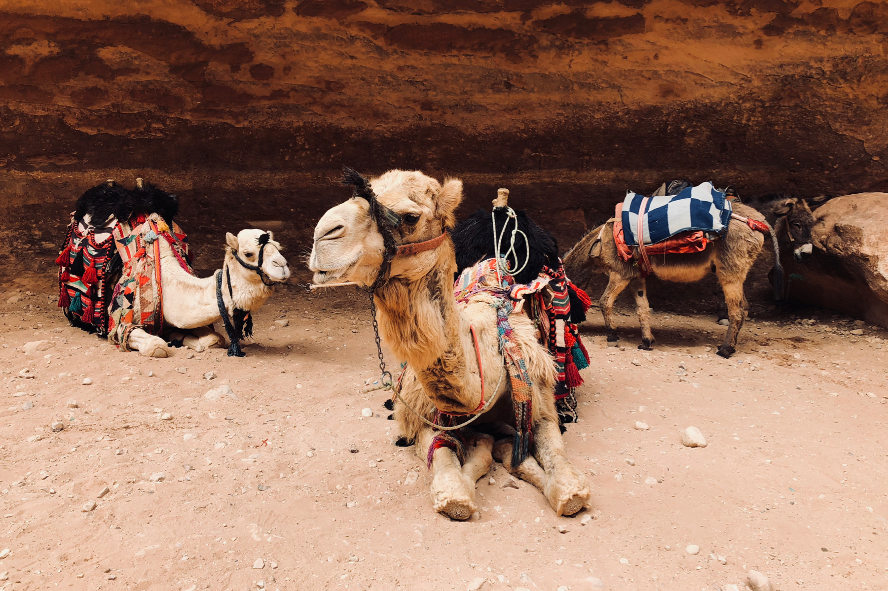
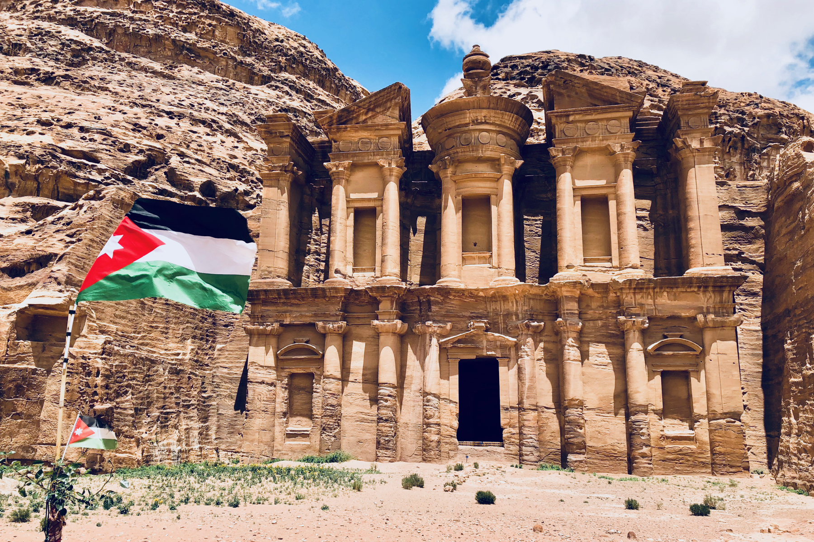

The lost city of Petra, of Indiana Jones fame, sits in the southern territories of Jordan, between Amman and Wadi Rum. This UNESCO World Heritage Site has been on my bucket list for a long time and I am glad to report that it does not disappoint. All I really knew about Petra was The Treasury building, which is famous for being the resting place of the Holy Grail in the 1989 film Indiana Jones and the Last Crusade. I was thrilled to descend the long and winding Siq, or path, into Petra, where The Treasury is not the first thing you see along the path, and as it turns out, it is not nearly the last thing either.
Petra In a Nutshell
- Highlights - Unbelievable mysteries to explore, open-range hiking and exploration, more sites than you could find in a week of trying, high-speed and open WiFi almost everywhere, clean and modern bathrooms.
- Lowlights - Not very accessible if you have limited mobility.
- Bottom Line - No trip to Israel or Jordan is complete without a day in Petra. Hands down, this is a top-5 site in the world.
How to get to Petra
I joined a tour group out of Tel-Aviv to make this journey into Jordan. Along with visiting Wadi Rum and Jerash, we also got a day in Petra. The tour was operated by Abraham Tours and cost about $500USD inclusive of transportation, food, and accommodation.
Pro tip: if you book a night at the Abraham hostel, you get 10% off any tour they offer. In this case, a $20 room saved me $50. Nice!
The drive to Petra is its own experience. The roads are very new and well-maintained, so no fear there! Along the way, you get treated to incredible views of the desert vistas and a sneak-peak into the lifestyles of modern-day Bedouin tribes. Upon arrival at the entrance to Petra, there are a few hotels and ample parking, so if you were to come here on your own, there are some really nice places to stay.
The welcome center to Petra is much more than a gift shop and a ticket booth. There are a series of cafes and restaurants, a museum, an official hotel, and also a bar claiming to be the world’s oldest because it is inside of a cave which has been actively used for trade and rest for thousands of years. Just the same, it is a really awesome place to relax at the end of the day. But let’s leave that for later. Time to descend the Siq and discover Petra!
 A 1-day ticket to Petra.
The Siq into Petra
The sloping path into Petra is called the Siq. It is a gently-sloping dirt and stone path on the main Petra trail which is 8km long. Along the way, there are various tombs and petroglyphs to admire before the path is taken over by towering walls formed by a massive earthquake eons ago.
The majority of structures which you will discover in Petra are tombs and are the only remaining symbols of the Nabataean Kingdom which ruled the area from 400BC until the Roman’s conquered them in the 1st Century AD. Not much is known about the Nabataean people except for what has been found in trade Greek and Roman trade records from the era.
 Obelisk Tomb and the Triclinium along the Siq to Petra
The tombs of Petra do not have names or years indicated on them, however, some of the architecture in Petra offers clues about the period in which they were built. One of the first structures you come to along the Siq is called the Obelisk Tomb. It is called this because it features obelisks, which is very uncommon in Petra. Probably this tomb was built for a wealthy Egyptian merchant or someone who had a strong connection with Egypt.
One thing to note about these structures is that they are not built. Rather, they are carved. What you see here in all these photos are structures carved into the side of mountains. Occasionally, where the curvature of the rock-face wasn’t large enough to accommodate the builder’s vision, some stone might be added on top, but for the most part, these structures have all been carved out of the side of the mountains with great precision and little error. Impressive!
Beyond the Obelisk Tomb and a few others, the rock walls start to climb up on either side and the Petra experience turns into something truly unique. The predominant material in Petra is sandstone. The sandstone is iron-rich, giving it a brilliant rose color (similarly to why the sand in Wadi Rum is red). Millenia of water flow has carved the walls and floor of the Siq smooth, adding to the alien-like environment.
Pro tip: check the weather for any rain before you go. Petra is known to flash-flood and it is very dangerous to be in the Siq when it is raining anywhere in the region. The local police and guides take every precaution to give advance warnings and to evacuate visitors. I arrived on a dry day, but our guide showed a video from 1-week before when the whole place was full of rapids!
One really interesting thing to note in the Siq (as pictured below) is the waist-high channels carved into the sides of the walls. These are actually aqueducts which carried fresh water to the buildings below! In a few places you can still see the clay pipes which were set into these carvings, but in most places, it is just an open trough today.
 Halfway down the Siq on the way to The Treasury at Petra
The Treasury at Petra
As you approach the bottom of the Siq, a view of The Treasury starts to thinly reveal itself before suddenly the whole thing comes in to view and you find yourself in a deep cavern surrounded by magnificent walls on all sides and The Treasury looming over you. It is a site to behold and it is no wonder that The Treasury was voted as one of the New7Wonders of the World in 2007!
Of course, this is the building that India Jones made famous as being the resting place of the Holy Grail. Great movie, and a perfect location for that scene, but certainly not what this building ever did. Inside, rather than a labyrinth of obstacles which can only be passed by the devout and the hyper-intelligent (Indi..), there is a single large chamber with no markings, carvings, or anything else which would suggest much of anything.
Due to years of vandalization and graffiti, the inside of The Treasury is not accessible to visitors, but that’s ok, the outside is where the show is. Of all the structures in Petra, The Treasury is the most well-preserved due to the closeness of the surrounding cliffs. The Treasury only receives a maximum of 4-hours of daylight per day and is protected from wind, rain, and other elements which could cause it harm.
Pro tip: The photo below is taken upon a ledge high above the place where the Siq ends in front of the Treasury. There are two ways to get there: the 3.5km (2.2 miles) Al-Khubtha trail (AKA green trail), which takes about 3 hours or pay one of the local kids at The Treasury to take you up a secret (and guarded) path which takes about 5 minutes. Trust me, you don’t want to do this by yourself and the $5 will help a local family. The best part: you get an awesome photo like this, and now you freed up 3 hours of your day to explore other trails instead!
 The Treasury at Petra.
Getting around inside Petra
Thanks to eons of water flow and millions of visitors, the paths around Petra are pretty smooth and free of obstacles, so I argue that the best method of transportation is your own two feet. Keeping that in mind, Petra is 264 sq km (102 sq miles) and the whole site is on a slope, not to mention that each of the impressive sites resides atop of a different hill. So if by the end of the day you find yourself a bit exhausted, I wouldn’t judge you for hopping on a camel or donkey back to the visitor’s entrance.
Additional Reading: Mars on Earth: The Wadi Rum Desert in Jordan
There are several camel stations around Petra, so you can hop on one from and to just about anywhere. If you were to take one at all, I recommend that you wait until the end of the day and take one from next to the Treasury back up to the visitor’s entrance.
 Camels and donkeys await tourists to give rides to.
The Monastery at Petra
What I most enjoyed about Petra is that it is so much more than The Treasury. I had no idea that Petra was a whole ancient city and not just that one building. There are many tombs and other buildings carved into the sandstone at Petra, The Treasury is just the most well-preserved. The Monastery is the biggest monument and was built around 100BC.
This magnificent structure appears to be built rather than carved, but actually, it is a mix. You can see the rock wall to the right is part of the original hillside from which The Monastery is indeed carved. But you can also see a sloping seam-line on the column left of center which slopes in the direction of the original hillside, thus indicating that the top of the Monastery was indeed built, at least in part.
 The Monastery at Petra
The High Place of Sacrifice and Trail
The name “Petra” comes from the Greek word “petros” which means “stone, rock.” Greek merchants observed the city’s inhabitants offering sacrifice to their deity on a large stone, and thus the city became known as Petra. Considering this, a stroll to the High Place of Sacrifice is highly recommended. The trail has two entrance points: one next to the Amphitheater behind The Treasury, and one closer to the trailhead which goes up to the Monastery. I recommend seeing the Monastery first and then take the trail to the High Place of Sacrifice because then you’ll be pointed in the right direction to head out to the visitor’s entrance. Many people only do the short in/out part of the trail from the Amphitheater, but that is a mistake! The longer part of the trail is much easier going up and there are incredible sites along the way.
Aside from the trail being very beautiful and mostly void of other visitors, there are a number of other tombs along the way which you can enter and fully explore. When you do arrive at the High Place of Sacrifice, you will be confronted with the best panoramic view of Petra, which you can enjoy over a cup of Bedouin tea, prepared fresh for you in a small tent with comfortable seating right on the edge of the cliff.

Along the route of the High Place of Sacrifice Trail, A.K.A. "the yellow trail."

Stacked stones on the route of the High Place of Sacrifice Trail

The Roman Soldier's Tomb on the High Place of Sacrifice Trail
The Royal Tombs of Petra, taken from atop the High Place of Sacrifice
When are you going to Petra?
Tag! You’re it! I hope that I have encouraged you to make a trip to Petra in your near-future. I can’t recommend it enough! Have you been before? Do you have questions I can answer for you? Do you have additional information which should be shared with readers? Please leave a comment below and let me know your thoughts. Safe travels!
Judson L Moore
Travel addict. Ambitious about making the world a better place. Writing what I learn along the way.
Related posts


Are you happy?
Are you a young person curious about how to make it in this world? Are you the parent, teacher, or mentor to someone in need of guidance? If yes, then this book is for you.